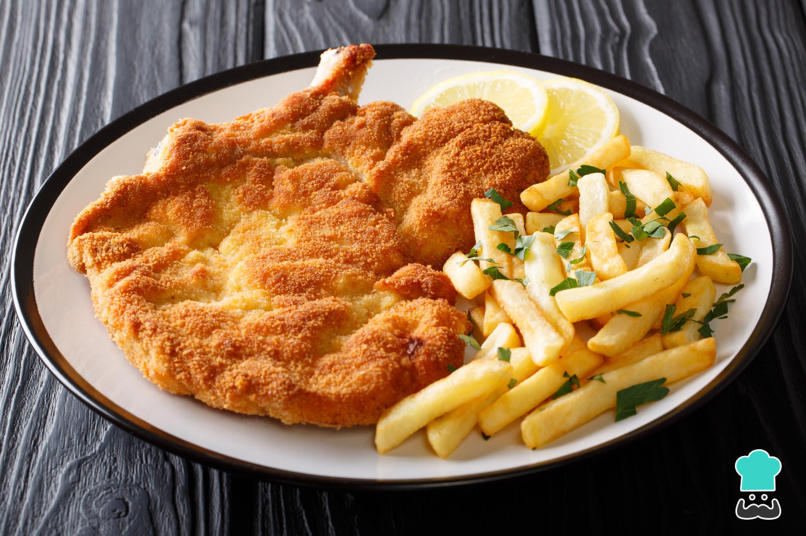

ü°∏ Ingredientes
- 8 filetes de nalga de ternera con 1cm de grosor
- 1 bolsa de pan rallado cantidad necesaria
- 6 huevos
- 1 pizca de sal
- 1 pizca de pimienta
- 1 pizca de orégano
- 1 chorro de aceite para freír
ü°∏ Paso a paso
- Para empezar con la receta de milanesa de carne, primero debes sazonar la carne con la sal, la pimienta y el orégano al gusto. Luego, pasa cada uno de los filetes de ternera por el pan rallado que necesites (por ambos lados).
- En un recipiente aparte, bate los huevos y baña los filetes de carne en ellos. Después, para fijar el rebozado de las milanesas, vuelve a pasarlos por el pan rallado.
- Ahora, pon el aceite a calentar y, cuando esté caliente, fríe los filetes de carne rebozados a fuego medio. Deberás freírlos hasta que estén dorados por ambos lados.

- Para retirar el exceso de aceite de las milanesas de carne puedes colocarlas en papel absorbente. ¡Listas para comer! Cuéntanos en los comentarios tu opinión y comparte con nosotros una fotografía del resultado final.

ü°∏ Resutado Final
Aunque no se conoce el origen exacto de la milanesa de carne, se trata de un plato típico de la gastronomía italiana, argentina, paraguaya, boliviana y uruguaya, entre otras. No obstante, su fácil preparación y delicioso sabor ha hecho que se
extienda por todo el mundo y, hoy en día forma parte del recetario personal de la mayoría de hogares. ¿Todavía no sabes cómo prepararla? ¡Muy fácil!